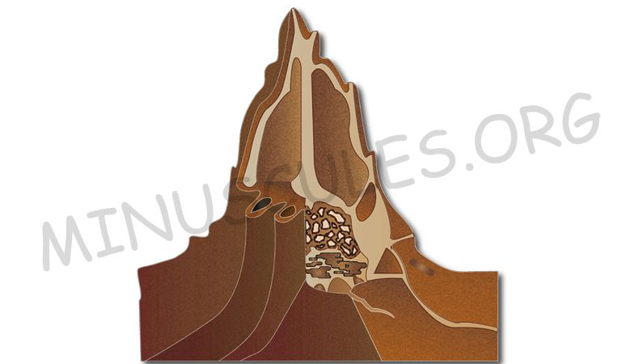

The Termite Mounds
August 9, 2020 11:50pm ISTCan you imagine that a termite, which is barely the size of a fingernail, when coming together in a million or two, can build mounds that can reach a height of 17 feet or even more!? Termites live in big social colonies which include kings, queens, workers, and soldiers. They are generally large, whitish or brown in colour, soft-bodied, avoid sunlight and build huge clay mounds called termitariums that can sometimes also be found on rock faces or engulfing parts of trees and stumps.
Well, various car crash incidents have proved that these mounds are indeed, very tough! Many vehicles have been written off after high-speed clashes with these formidable obstacles. Termite mounds are evidence of hundreds of millions – billions of termites that have spent their entire lives building over vast tracts of land in our remote tropical outback. The inside of these termite mounds is made up of several tunnels, galleries, and nest chambers. The mounds are built from the soil, saliva, and excreta, and this combination accounts for the different coloured mounds found in various areas of the north.

The grass-eating spinifex termites found right across northern Australia, from the north-west of WA to Cape York, are the builders of the largest termite mounds found in the country. Some are reported to be around seven meters high and weighing ten tonnes or more each. The shape of the spinifex termite mounds varies from one area to another. They are generally conical, some in cathedral-like shapes, and are often seen standing tall over vast areas.
Termite mounds can take four to five years to build, but a hefty downpour might cause a third of the mounds to collapse. So termites are always scurrying to rebuild their mounds as fast as the weather erodes them.
Another species of termites called “magnetic termites”, was once believed to build their mounds a north-south axis to line up with the earth’s magnetic field. However, later it was proven that this was not entirely true, as these cunning little creatures actually build their homes according to the passage of the sun so that it never shines squarely and directly on the broad surface of their mounds.
These mounds are not only home to the millions of termites, but also provide shelter to various other species. Geckoes, lizards, pythons, ants and spiders, and even birds, like the kingfishers and other species, are found nesting in excavated outer walls and crevices in these mounds. These termite mounds are definitely one of the most fascinating nests made!
Author :
ANCHITA SHARMA
Related Articles
Social Insects And Pandemics
August 7, 2020 10:30pm IST
Pandemic, a word which we all are familiar with now. Pandemics have happened as early as 3000 BC (of which we have a record of). Humans know how to prevent and treat diseases.

How Ants Moves In Ques ?
November 12, 2020 4:47pm IST
We have all seen the ants walking along a line towards a food source. But have you thought about how they could be so precise in their movement? Are there any traffic ants or road maker ants that make sure that ants walk in a designated path? They sure don’t have GPS to navigate their way around.

Ants Which Love Electrics
July 7, 2020 8:50pm IST
Yes, you read the title right! These ants, or to be precise, Raspberry Crazy Ants, seems to be attracted to electrical equipments. Nylanderia fulva which is an ant found in South America is not called “crazy” due to their weird infatuation for our gadgets, but because of their random, nonlinear movements...

Bioluminescence In Fireflies
July 5, 2020 11:51pm IST
Ever wondered why and how a Firefly(lightning bug) is able to light up?? Is it to scare away predators? or to communicate with its peers? or to produce heat for keeping itself warm? In this article we have covered answers to all such questions and more...